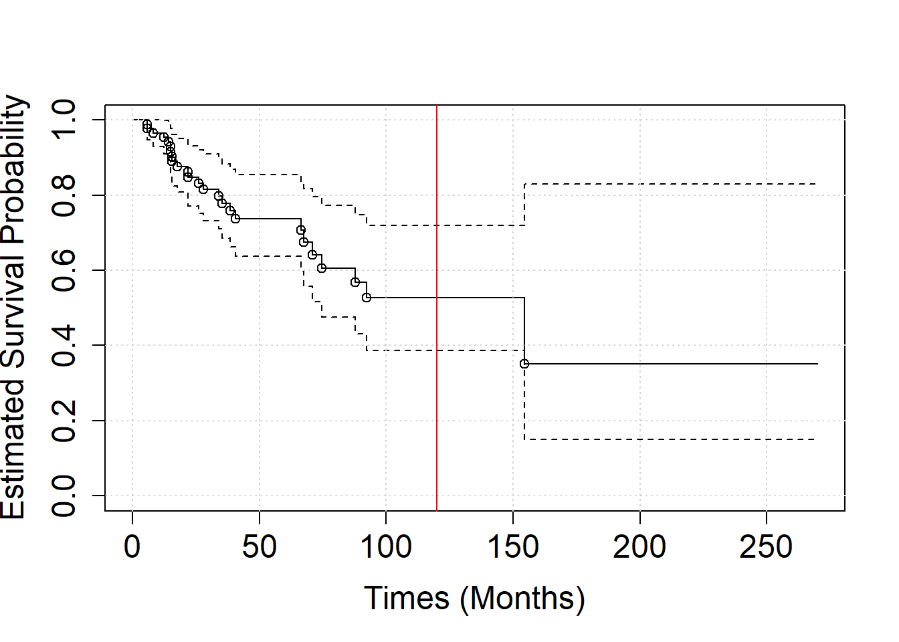
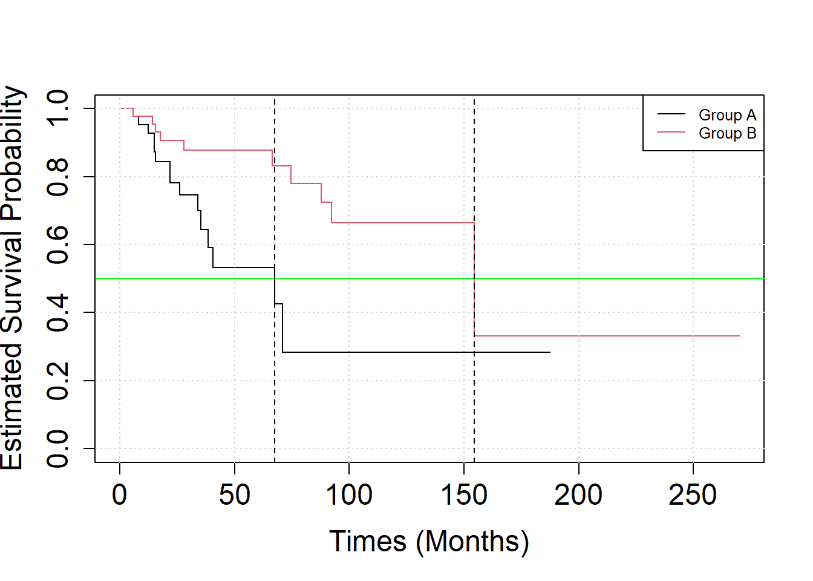
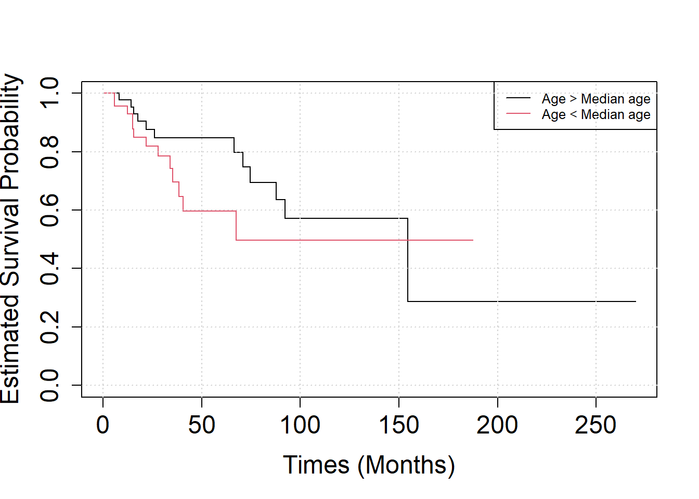

Survival analysis
Theory
For each subject \(i\in\{1,...,n\}\) let’s define \(T_i\geq 0\) the time of the event, \(C_i \geq 0\) the censoring time. Let \(T\geq0\) be a random variable, that we view as the time until the occurrence of death. The probability that a subject will survive till a time \(t\) is \[ S(t)=Pr(T>t)=1-Pr(T\leq t)\;, \] where \(S\) is called survival function. The Kaplan-Meier estimate of survival probability is define as
\[ \hat{S}(t)=\prod_{i:\,t_i\leq t}\left(1-\frac{d_i}{n_i}\right)\;, \] where \(d_i\) the number of deaths happened at time \(t_i\) and \(n_i\) the individuals known to have survived up to time \(t_i\).
Exercises
Exercise 10.1
The survival of patients was studied after some neurological surgery. \(N=50\) patients were operated with scheme A and another group of \(N=50\) patients were operated with scheme B. Assume that the mean survival time is three years (i.e. 26 months) under scheme A, and five years (i.e. 60 months) under scheme B, and both survival times are exponentially distributed. At the end of this study, approximately 30% of scheme A and 20% of scheme B patients have died.
Generating fake survival data:
set.seed(123)
N = 50
timesA = rexp(n=N, 1/26)
timesB = rexp(n=N, 1/60)
eventsA = rbinom(n=N, prob=0.3, size=1)
eventsB = rbinom(n=N, prob=0.2, size=1)
times = c(timesA, timesB)
events = c(eventsA, eventsB)
# times=timesA
# events=eventsA- Analyse the data using survival R package. For this purpose, firstly create a so-called survival object using Surv function.
library(survival)
## Store survival times and event (deaths) in a survival-object.
SURV = Surv(times, events)
SURV## [1] 21.9298888 14.9918670 34.5554266+ 0.8210113+ 1.4614854+
## [6] 8.2290316+ 8.1699096 3.7769369+ 70.8821481 0.7579896+
## [11] 26.1255815 12.4855829+ 7.3063543+ 9.8050636+ 4.8953851+
## [16] 22.0944394+ 40.6432920 12.4477708 15.3643057+ 105.0663045+
## [21] 21.9218930 25.1126515+ 38.6171706 35.0491566+ 30.3817536+
## [26] 41.7521609+ 38.9153146+ 40.8369662+ 0.8259613+ 15.5440920
## [31] 56.3638334+ 13.1720089+ 6.7485033+ 67.5191950 31.9546690+
## [36] 20.5577257+ 16.3612820+ 32.6206661+ 15.3058007+ 29.3615409+
## [41] 10.9294849+ 187.4861970+ 21.9887711+ 5.8640922 28.6088093+
## [46] 58.4559480+ 35.4570918 14.9861834 70.8571721+ 34.1162391
## [51] 5.4354810+ 18.3722310+ 64.0327842+ 18.8109754+ 58.4784090+
## [56] 113.2693989+ 33.8753162+ 154.6176797 62.8617449+ 61.4664805+
## [61] 61.6721769+ 17.0801076+ 93.7831133+ 2.5252976+ 5.9178534+
## [66] 5.9141587 16.8231097+ 17.7472175 58.3457789+ 55.4416334+
## [71] 98.5442716+ 97.1947661+ 152.1687324+ 91.2929774+ 22.8008522+
## [76] 14.3107780 27.9892454 2.5362871+ 19.1806140+ 38.6166552+
## [81] 34.3537862+ 12.9633302+ 269.9204039+ 111.4254332+ 41.1275183+
## [86] 86.3671576+ 103.8692390+ 74.6869980 87.7980336 92.2436387
## [91] 0.2759476+ 66.5259281 17.9982191+ 71.5201804+ 66.8957222+
## [96] 4.0425535+ 28.8401232+ 94.2272603+ 15.5967664 111.4153372+The survival-object has one entry for each subject that is the survival time, followed by + sign if the subject was censored.
Use survfit to calculate Kaplan-Meier estimates of the survival function for the whole study collective. Use help to understand which is the argument of the survfit function.
S1 = survfit(SURV ~ 1)
S1## Call: survfit(formula = SURV ~ 1)
##
## n events median 0.95LCL 0.95UCL
## 100.0 25.0 154.6 74.7 NAPlot the Kaplan-Meier-curve plus confidence band into a graphic.
#plot(SURV, conf.int = FALSE)
plot(S1,
xlab = "Times (Months)",
ylab = "Estimated Survival Probability",
cex.axis=1.5,
cex.lab=1.5)
grid()
abline(v = 120, col = "red")
#Extra
#raw calculation of Kaplan-Meier estimates
test=data.frame(times=times,events=events)
test= test[order(test$times),]
test$n<-nrow(test):1
test= test[test$events>=1,]
#compute 1-d_i/n_i
for(i in 1:nrow(test)){test$survival[i]=1-test$events[i]/test$n[i]
}
#calculate the estimate of the survivl function
for(i in 1:nrow(test)){test$p[i]=prod(test$survival[1:i])}
points(x=test$times,y=test$p)
What is the probability of a patient in this study to survive more than 10 years (120 months)? (use the summary function )
summary(S1, times = 120)## Call: survfit(formula = SURV ~ 1)
##
## time n.risk n.event survival std.err lower 95% CI upper 95% CI
## 120 4 24 0.527 0.0836 0.387 0.719- Let’s consider separately the
eventsAand theeventsB.
group = gl(2, N)Analyse the effect of treatment scheme on the patient’s survival by Kaplan-Meier curves. What is the median survival time in the two groups?
S2 = survfit(SURV ~ group)
S2## Call: survfit(formula = SURV ~ group)
##
## n events median 0.95LCL 0.95UCL
## group=1 50 15 67.5 35.5 NA
## group=2 50 10 154.6 92.2 NAPlot the Kaplan-Meier-curve of the two groups together.
plot(S2, xlab="Times (Months)", ylab="Estimated Survival Probability",
cex.axis=1.5, cex.lab=1.5, col=c(1,2))
grid()
legend("topright", legend=c("Group A", "Group B"), col = c(1, 2),
lty=1, cex=0.8)
abline(h = 0.5, col = "green")
# median survival time
abline(v = quantile(survfit(SURV ~ group), probs = 0.5)$quantile, lty = "dashed")
- Assume that patients who survived more than 100 months were on average younger than the others patients.
ageA = rnorm(n = N, mean = 55, sd = 2.5)
ageB = rnorm(n = N, mean = 50, sd = 2.5)
age = c(ageA, ageB)
age = (age>median(age))Analyse the effect of age on the patient’s survival by Kaplan-Meier curves.
S3 = survfit(SURV ~ age)
plot(S3, xlab="Times (Months)", ylab="Estimated Survival Probability", cex.axis=1.5, cex.lab=1.5, col=c(1,2))
legend("topright",
legend=c("Age > Median age", "Age < Median age"),
col = c(1, 2),
lty=1, cex=0.8)
grid()
Analyse whether age at surgery has an influence on survival using Cox regression (R function coxph).
C = coxph(SURV ~ group+age)
summary(C)## Call:
## coxph(formula = SURV ~ group + age)
##
## n= 100, number of events= 25
##
## coef exp(coef) se(coef) z Pr(>|z|)
## group2 -1.3757 0.2527 0.5753 -2.391 0.0168 *
## ageTRUE -0.3791 0.6845 0.5477 -0.692 0.4889
## ---
## Signif. codes: 0 '***' 0.001 '**' 0.01 '*' 0.05 '.' 0.1 ' ' 1
##
## exp(coef) exp(-coef) lower .95 upper .95
## group2 0.2527 3.958 0.08181 0.7803
## ageTRUE 0.6845 1.461 0.23397 2.0026
##
## Concordance= 0.631 (se = 0.065 )
## Likelihood ratio test= 7.38 on 2 df, p=0.02
## Wald test = 7.17 on 2 df, p=0.03
## Score (logrank) test = 7.71 on 2 df, p=0.02Knowing that the R summary for the Cox model gives the hazard ratio exp(coef) for the second group relative to the first group, namely treatment B versus treatment A and old vs young, could you give an interpretation of the output?
Solution
First look at Wald statistics. A negative coef means a reduction of the risk, this reduction is quantified by exp(coef).